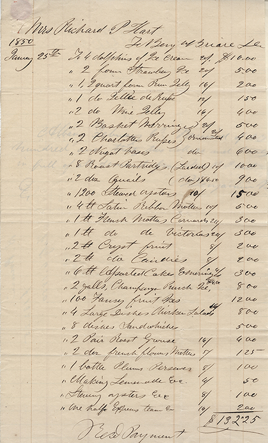

You have been invited to the Hart family Ball of January 1850 with 180 other guests.
Betsey Hart was a well-to-do member of the Troy community. She and her husband Richard
(who died in 1843) had 14 children, 10 of whom were daughters.
Sponsoring a Ball was an opportunity for them to meet suitors for eventual marriage.
Betsey Hart hired a 9-piece band that assembled at the end of the hallway between the main stairs
and the dining room doors so the music could be heard all over the house.
They played this Virginia Reel song for guests to dance in the parlor.
This app will lead you on a guided tour where you can interact with people of Troy in 1850.
Much of the information is based on original research from ten trunks full of Betsey Hart’s bills and
financial papers found in 1983 at the Troy Savings Bank.
To begin your visit, point your mobile device toward the clock in the hallway.
Tap on the images that appear to open a question and answer dialogue.
Good evening. Welcome to the Hart House. We have dancing in the parlors, and stewed oysters,
roasted grouse and champagne in the dining room.
If there is anything that you need, I will be delighted to assist you.
Mrs. Hart's balls start at 9 o'clock and sometimes last until three in the morning,
but the band will leave around one in the morning.
I was born in Ireland and immigrated to Troy to escape the Irish Potato Famine.
The Harts are one of the few families in Troy to employ Irish maids and Black coachmen.
Mrs. Hart is kind enough to pay me $1.00 a week and includes room and board.
I've cleaned for her and even helped take care of the younger children on occasion.
I mainly work in the house,
but many other responsibilities are left to other servants, like the cook and coachmen.
I've worked from dawn to dusk, helping the other two Irish servants cook, clean and attend
to the 14 youngest children. We've cleaned the gasolier globes, moved the parlor furniture to
the back parlor and rolled up the carpets to make room for dancing.
The youngest daughters also needed help with their hair and clothing,
not to mention seeing to all the deliveries for the party.
The Sitting Room has ice desserts and champagne punch. It is where guests can bring their food and drink
to rest from dancing and mingle with each other.
Flavored desserts of elaborately carved ice and baked scones.
Ice storage has had great improvement over the years, allowing for foods to be served out of season,
but it can still be expensive.
This house was finished in 1825 when the popular architecture style was the Federal or Adams style,
which had its heyday from 1780-1840.
These homes had simple floor plans: symmetrical, box-shaped rooms with floors stacked upon one another.
Staircases are modest and hidden. Most of the extravagant decor was saved for the exterior of the home.
As with most homes of this design, popular in New England, the front door opens to a hallway
that divides the house in half. Over the decades, designed tastes have changed, and we no longer have sitting rooms.
It can be served on ice, with punch, or even alone. Technically, champagne is the name
of sparkling wine from the Champagne region in France. The science of making sweet,
sparkling wine is better understood today as well, especially since the process of
riddling the sediment is now done with a machine. This makes the drink more bubbly than it's
ever been!
It is all the craze in Europe right now since glassmaking and mechanical corking
were perfected. You can find it advertised in all the magazines, newspapers, and
billboards. And, it's a perfectly respectable drink for ladies. Champagne is the
preferred drink of the rich and famous.
Mr. Burden has drunk himself into quite a fix. I've already told him I have saved
my last dance for Mr. Richard Hart Jr. Mr. Burden is in no condition to dance with anyone,
including himself.
Heavens no! At the ball, the gentlemen must approach the ladies and ask for a couple's dance,
like the Polka and the Waltz. It would be improper for me to ask Mr. Hart. Line dances such as
the Virginia Reel are an exception to that rule.
A couple's dance is a close dance, with both partners arm in arm. The Waltz popularized
this type of dancing in my mother's time. However, the Polka is more popular these days.
It uses a gliding chase step and turning hop, rather than the dizzying spins of the
Waltz.
Miss Tillman has refused any more offers to dance with me. She may have been embarrassed because
I was so exuberant that I fell while dancing the Virginia Reel.
A folk dance that dates from the 17th century, with Scottish and English roots.
Couples form two lines facing each other, with men on one side and women on the other.
They meet as a couple at one end, and dance between and down the lines to the other end.
The band has been paid to play for about four hours, but Ms. Hart will stay up
until the last guests leave, usually until three in the morning.
My name is Richard Hart Jr. and I am 24 years old, the seventh of 14 children.
I am hoping to meet my future wife at this Ball tonight.
Maria Tillman is in the parlor, and I shall ask her to dance.
We have been good friends since our school days in New York City.
I manage the family business. Because women are not legally permitted to manage property
and finances, my mother has worked through me to greatly expand the wealth that my father
created. He started his merchant business by supplying the U.S. Army and Navy in the War of 1812,
making a great deal of money.
My parents were married in 1816. My mother, Betsey, has been dealing with the loss of my father,
Richard. He died in this house in 1842. He was taking a vapor bath for a bad chest cold and the
tent-like covering of the vapor bath accidentally caught fire from the alcohol burner being used
to make steam. He had served as Mayor of Troy from 1836 to 1838 and was involved in many important
community activities in Troy.
My parents both have had quite an interest in philanthropic causes. My father was one of the founders
of the Troy Orphan Asylum. My mother has strongly supported education for young women at the Troy
Female Seminary, where my father was one of the founding trustees of the school.
Eight of my sisters, in fact, have attended the institution.
Mrs. Hart has the finest tastes in town. The stewed oysters arrived from the city this morning, and the
champagne is from France and purchased in a fine shop in New York City.
Our table is decorated with japonica flowers, imported from the Orient
and grown in Mr. Louis Menand's greenhouses across the Hudson River.
Food and champagne were served buffet-style at this dining table, without the chairs present.
Guests filled their plates and glasses, and took their food to the parlor and sitting room to enjoy.
The caterer's bill was $132.25 in 1850. This is equal to over $4060 in 2014 dollars.
Mr. Benjamin Briare was a well-known caterer from Albany.
He and his staff brought the food for the party up the river on one of the steam boats.

Mrs. Hart bought oysters, champagne, carved ice desserts and other expensive, imported items.